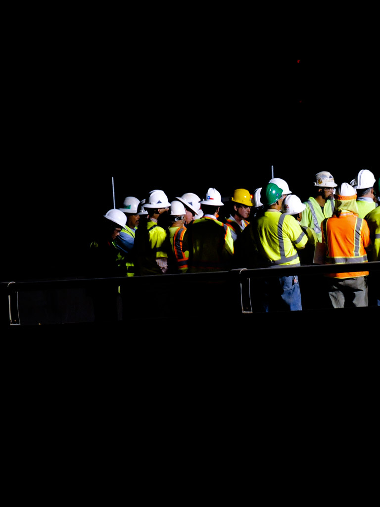

Our values
The Ferrovial Agroman Technical Office (FTO) has a reputation for the delivery of exceptional projects based on engineering capabilities,
experience in the field, optimization of the technical solutions and the constant and challenging pursuit for technical excellence.
The combination of long-standing experience and a diverse team of experts in all engineering related fields enables FTO to deal with a great number of projects of enormous scale.
The combination of long-standing experience and a diverse team of experts in all engineering related fields enables FTO to deal with a great number of projects of enormous scale.
Optimization of the technical solutions
Innovative Design
Quality
Multidisciplinary Project Teams
Safety
Sustainability
Design and Construction Integration
Innovative Design
Quality
Multidisciplinary Project Teams
Safety
Sustainability
Design and Construction Integration